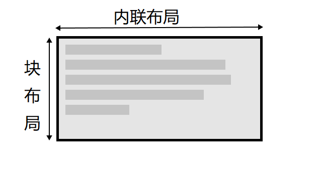
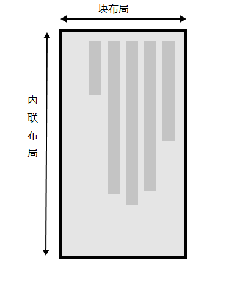

2.文本的书写模式与布局
外部显示类型元素分为块级元素和内联元素，而这两种布局，块级显示和内联显示与文本的书写模式有密切关系。
我们再看一下writting-mode的属性值：
- horizontal-tb
- vertical-lr
- vertical-rl
蓝色的部分，horizontal和vertical，指的是文本方向，水平和竖直，这也是内联元素的显示方向。
红色的部分，tb，lr,rl，是top-bottem，left-right，right-left的简写，指的是块流的方向，
就是块级元素的显示流向
这种书写模式的两种维度表示的是块级显示和内联显示的外部显示类型。
关于块维度和内联维度则表示的是书写模式下的块显示方向和文本显示方向。
这种显示方向的不同又可以称为快布局和内联布局的不同。
一下是两种书写模式下两种维度（布局）


3.逻辑属性和逻辑值
heading
this is first paragraph
this box is horizontal-tb and width is 3em
heading
this is first paragraph
this box is vertical-lr and width is 3em
而可以看到，在上面例子中，盒子在vertical-lr纵向书写模式下时，由于宽度（width)是固定属性,
所以直接"溢出"了到盒子外了
我们希望的是让宽度和高度随着书写模式变换而变换。因为纵向书写模式下，内联维度方向tb，
这个时候宽度(width)属性表示的是lr方向上的块级维度方向，而块级维度方向应该随着块内容的增加而变长，
所以使用width固定宽度是不行的。
逻辑属性就是来解决这一问题的。这些属性用逻辑和相对变化代替width,height这样的物理属性。
- inline-size:内联尺寸，内联维度的尺寸，对应横向书写模式下的width属性
- block-size:块级尺寸，块级维度的尺寸，对应横向书写模式下的height属性
heading
this is first paragraph
this box is horizontal-tb and inline-size is 3em
heading
this is first paragraph
this box is vertical-lr and inline-size is 3em
上面的例子将width改为逻辑属性line-size,并且附上属性值fit-content
逻辑外边距、边框、和内边距
盒模型中的外边距，边框，内边距都是物理属性，其对应的逻辑属性为：
- margin-top:
margin-block-start——
总是指向块级维度开始处的外边距
- padding-left:
padding-inline-start——
总是应用到内联开始方向上的内边距
- border-bottom:
border-block-end——
总是应用到块级维度结尾处的边框
Physical Properities
a paragraph.
Physical Properities in CSS.
Logic Properities
a paragraph.
Logic Properities in CSS.
Physical Properities
a paragraph.
Physical Properities with lr writting-mode in CSS.
上图中，物理属性的边框样式和逻辑属性的边框样式除了writting-mode不一样外，其余都是一样的。
因为右边使用了逻辑属性。而在改变writting-mode,还是要用物理属性，那么就会像第三个一眼混乱
逻辑值
物理属性有一些值是以关键字来表示的：top，right等，这些值也有逻辑映射：
- top: block-start
- bottom: block-end
- left: inline-start
- right: inline-end
background-position: center bottom 20px;
background-size: center block-end 20px;
谷歌浏览器不支持，火狐浏览器支持。
逻辑属性是在物理属性之后出现的，因而最近才开始在浏览器中应用。
如果并没有应用多种书写模式，那么现在可能更倾向于使用物理属性，因为这些在使用弹性布局和网格布局时非常有用。